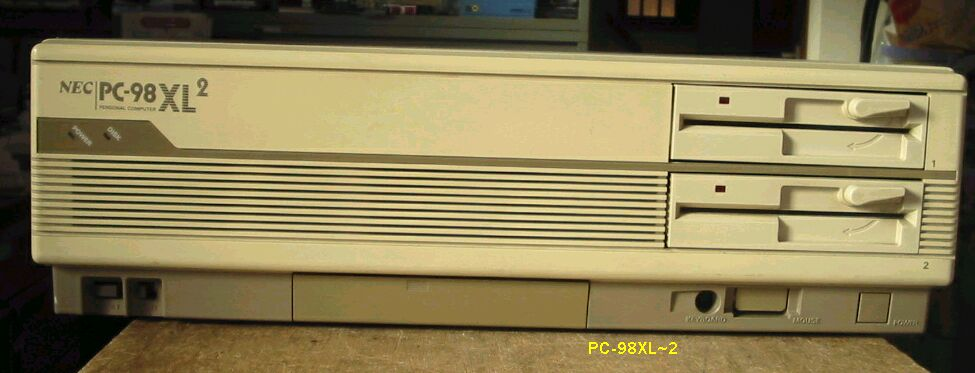
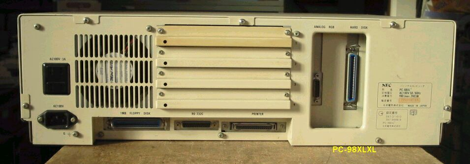
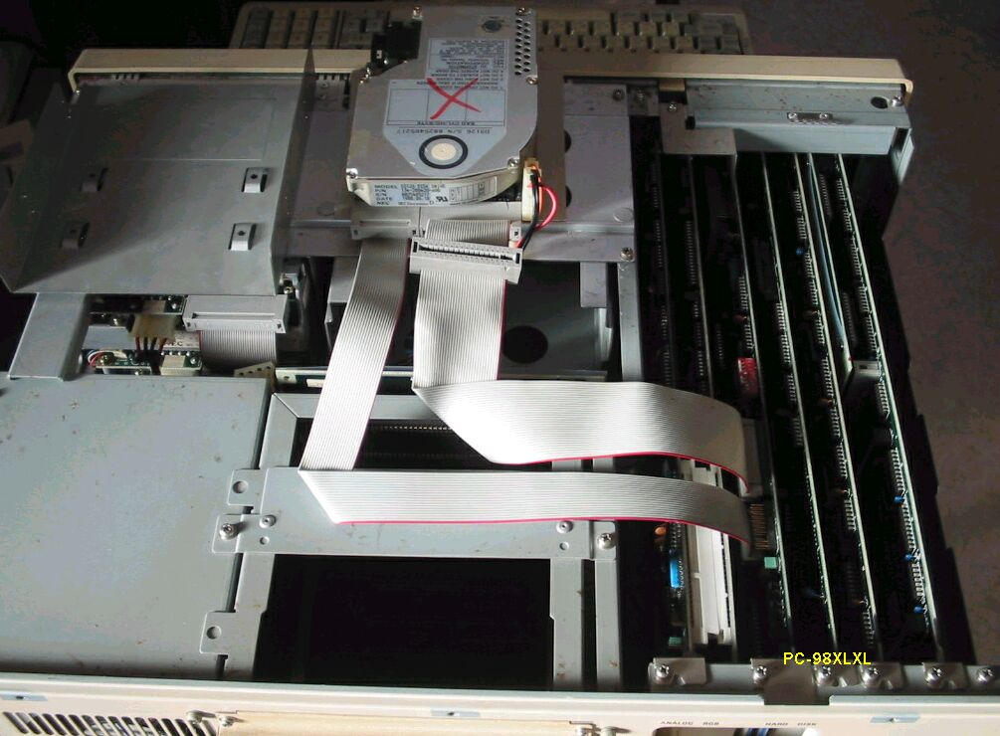
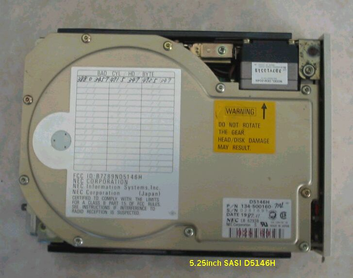

PC98XLダブル
PC98XLダブル 前面 この98は普通の98より二回り大きいです。

PC-98XLダブルの後ろ側

PC-98XLダブルの内部、内蔵HDDは不具合で取り外し、別なHDDをインストールしているところ。

取り外した内蔵HDD、D5146H SASI 40MB

PC98RLの仕様
型 名 ：PC-98XL2
価 格 ：988000
発表日 ：87/10
CPUクロック ： V30 8MHz/80386 16MHz
ROM ： N88-BASIC(86)及びモニタ96KB(H)64KB
標準RAM ： 1.5MB
最大ユーザーズメモリ ： 14.6MB(H)14.5MB
グラフィックVRAM容量 ： 256KB(H)512KB
グラフィックVRAM画素数： 640*400(H)112*750
グラフィックVRAM色数 ： 4096色中16色2画面(H)4096色中16色1画面
サウンドVRAM ：
テキストVRAM ： 12KB
拡張スロット数 ： 4
拡張スロット電源容量 + 5V ：0.8A
+12V ：0.06A
-12V ：0.07A
標準実装ドライブ FDD ：5インチ1M640KFDD2-DRIVE
標準実装ドライブ HDD ：40MB
内蔵インタフェースコネクタ：1MFDDI/F 固定ディスクI/F プリンタI/F
：RS-232CI/F マウスI/F
：アナログCRTI/F
漢字 ：標準:第一、第二、拡張
サウンド機能 ：オプション
カレンダ時計 ：μPD4990使用年サポートあり
ＶＣＣＩ適合 ：
使用条件 電圧 ：AC100V±10%
周波数：50/60
温度 ：10〜35
湿度 ：20〜80%(結露なし)
消費電力 標準 (W) ：190
最大 (W) ：240
エネルギー消費効率 (W) ：190
外形寸法 本 体 (mm) (W)：470 (D)：195 (H)：38.5
重量 本体 (Kg) ：19.3
(2004/01/06記)
変わった98のページに戻る